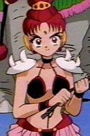

Junko Hagimori is a Japanese voice actress. She is affiliated with Aoni Production.
- Gender: Female
- Birthday: October 20, 1964
- Hometown: Hyogo, Japan
- Skills: Sign Language

|
|---|
|
Junko Hagimori is a Japanese voice actress. She is affiliated with Aoni Production.
|
|---|
|  | VesVes |
|
VesVes is the youngest member of the Amazoness Quartlet and workd for the Dead Moon Circus. She is he agressive member of the Quartlet. She is loud, brash, and somewhat violent. VesVes is the Circus' animal tamer, known as the Magician of Beasts. Her counterpart is Sailor Mars. She appear to lack a sense of reality and rushs into things without realizing what she's doing. |
Go Back to Main Page |
Go Back to Homepage |
|
|
|
OR |
|